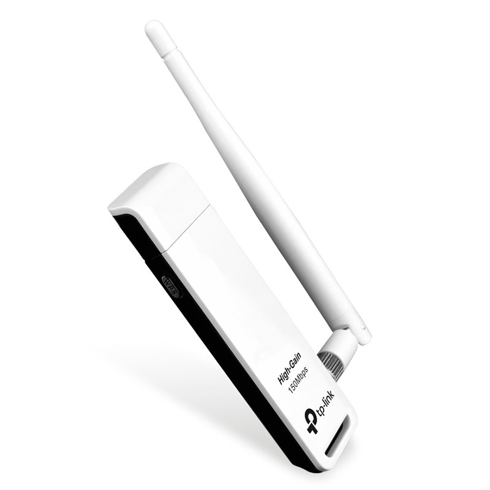
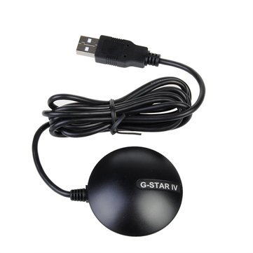

Intro
Boas xente, nesta entrada imos a revisar unha vella técnica de seguridade de redes wifi, o wardriving. O wardriving consiste en localizar redes wifis dentro dun lugar, que pode ser unha rúa ou unha cidade.
Para iso imos precisar certo equipo. Por unha parte, unha antena wifi para capturar o sinal dos puntos de acceso (aka routers), e pola outra un dispositivo GPS que nos axude a recoller a localización dende onde estamos capturando o sinal. Ademais precisamos un ordenador para manexar estes cacharros, eu pola miña parte usarei unha Raspberry, que é pequena e transportable, mais un ordenador portátil podería servir no caso de non dispoñer dunha (dende a crise dos microchips faise complicado conseguilas e van careiras).
En resumo, eu usarei o seguinte hardware para esta tarefa:
-
Antena wifi: TP-LINK TL-WN722N
 -
Localizador GPS: G-Star IV BU-353S4
 -
Raspberry Pi 4 (aka raspi)

-
Powerbank: Para a raspi precísase que de polo menos 2.5A, e recomendable 3A. Eu persoalmente usei unha de 2.1A e funcionou.
Instalación SO na Raspi
Imos ó tema entón. O primeiro vai ser preparar correctamente a raspi, para iso empezamos por instalarlle un sistema operativo. Eu pola miña parte instalarei Kali Linux, que ven cas ferramentas esenciais que imos precisar para a tarefa. Unha alternativa sería Parrot OS, que tamén penso debería traer xa instalado o software apropiado, e senón calquera outra distribución de Linux (Raspbian, Ubuntu, etc) pode valernos, mais haberá que instalarlle posteriormente as ferramentas.
Para descargar e copiar a imaxe de Kali Linux na tarxeta Micro SD da raspi,
podemos executar os seguintes comandos (Advertencia: asegurate de copiar a imaxe no
dispositivo da Micro SD, no meu caso /dev/sda, se o escribes no teu propio
disco podes borrar os teus datos ):
Podemos ver os discos USBs co seguinte comando:
lsblk -o NAME,MOUNTPOINTS,HOTPLUG | grep '1$'
sda 1
├─sda1 /media/user/boot 1
└─sda2 /media/user/rootfs 1wget https://kali.download/arm-images/kali-2022.4/kali-linux-2022.4-raspberry-pi-arm64.img.xz
xz -vd kali-linux-2022.4-raspberry-pi-arm64.img.xz
sudo dd bs=4M if=kali-linux-2022.4-raspberry-pi-arm64.img of=</dev/sdx> oflag=sync status=progress
umount /dev/sdx1
umount /dev/sdx2Con isto descargamos a imaxe (asegurade que o link conduce á última versión dispoñible), a descomprimimos, e a gravamos na tarxeta SD (pode ser outro disco no teu caso).
Despois introducimos a tarxeta SD na raspi e conectámola a un monitor, teclado e rato para empezar a configurala.
O contrasinal e usuario por defecto debería aparecer na información da distro
que instalaches, no meu caso kali:kali. É unha boa práctica cambiar o
contrasinal, que se pode facer co comando passwd.
$ passwd
Changing password for kali.
Current password:
New password:
Retype new password:
passwd: password updated successfullyConexión a raspi dende o PC
Sen embargo, ter a raspi conectada a un monitor, teclado e rato pode ser un engorro. Eu persoalmente prefiro conectarme a ela remotamente a través de SSH, e deixar os periféricos para o meu ordenador de mesa.
O primeiro é comprobar se está correndo o servidor de SSH na raspi. No meu caso xa está por defecto. Senón, para inicialo e facer que se inicie automáticamente no seguinte reinicio executamos:
sudo systemctl start sshd
sudo systemctl enable sshdUnha vez temos SSH correndo, podemos conectarnos á raspi se estamos na mesma rede. Para isto temos varias opcións:
-
Conectarnos a través do cable Ethernet.
-
Crear un punto de acceso wifi na raspi (se o noso modelo o permite) ao que poder conectarnos dende o noso PC.
-
Conectarnos a través do bluetooth (se o noso modelo o permite).
Eu vou optar por conectarme tanto por Ethernet, como por Bluetooth. Deste xeito, se algún mecanismo falla, temos un reemplazo. Vou descartar o wifi, porque ao estarmos facendo mapeo de redes wifi, no quero levar un punto de acceso eu mesmo que poida interferir, e ademais consume mais batería que a alternativa por Bluetooth.
Conexión á Raspi por Ethernet
Empezamos pola conexión Ethernet. Temos varias opcións para facer isto, no sentido de que hai varias opcións de dar unha IP á interface da raspi.
-
Configurar a IP a través dun servidor DHCP que estea no noso equipo. O bo disto é que non precisamos tocar a raspi, pero temos que ter un servidor DHCP correndo no noso equipo (que non é o mais adecuado para un pc persoal) e é posible que IP da raspi cambie cada vez que nos conectamos a ela.
-
Configurar unha IP estática na raspi. Isto precisa un traballo de configuración da raspi, pero nos aforramos andar instalando un servidor DHCP no noso equipo e aseguramos que a IP da raspi non vai cambiar.
Vou amosar ambos métodos e vos xa decidides cal vos gusta mais.
Conexión á Raspi por Ethernet (IP dinámica)
Para conectarse a unha raspi que non está configurada, podemos enchufala por Ethernet ó noso pc e correr neste un servidor DHCP. Eu vou usar dhcplayer, un programa para xogar con DHCP que me piquei fai un tempo e que permite lanzar un servidor DHCP de forma rápida, sen andar con ficheiros de configuración nin caralladas.
Se tes rust instalado podes usar
cargo install dhcplayer, e senón podes descargalo no repositorio de gitlab.
Entón, asignámoslle unha IP á nosa interface Ethernet (eno1 no meu caso, pero
pode cambiar) e executamos dhcplayer no noso pc indicándolle dita interface.
E finalmente (senón o fixeches xa) enchufamos o cable Ethernet á raspi e ó noso PC. Igual tarda un rato en darlle IP.
$ sudo ip addr add 192.168.77.1/24 dev eno1
$ sudo ~/.cargo/bin/dhcplayer server --iface eno1 --no-dns --no-router
Assigned IP 192.168.77.223 to e4:5f:01:40:3b:86 (kali-raspberry-pi)Indicamos
--no-dns--no-routernodhcplayerpara evitar configurarlle rutas á raspi, xa que non vai sair a internet polo noso pc, inda que podedes facelo se queredes.
Cando nos apareza a mensaxe indicando que lle dimos IP á raspi, poderemos conectarnos por SSH:
ssh kali@192.168.77.223Conexión á Raspi por Ethernet (IP estática)
Imos agora ver como configurar a interface Ethernet da raspi cunha IP estática.
Para isto o que podemos facer é crear un ficheiro de configuración en
/etc/systemd/network/<iface>.network onde <iface> é o nome da interface, no
meu caso eth0.
sudo tee /etc/systemd/network/eth0.network << EOF
[Match]
Name=eth0
[Network]
Address=192.168.77.1/24
DHCPServer=yes
[DHCPServer]
EmitRouter=no
EmitDns=no
EOF
Cambiade o nome da interface tanto no nome do ficheiro como no parámetro Name.
Este é un ficheiro de configuración de systemd-network que nos indica o seguinte:
-
Name=eth0=> Aplicarlle ás regras ó interfaceeth0 -
Address=192.168.77.1/24=> Por a IP192.168.77.1ca máscara/24(255.255.255.0) -
DHCPServer=yes=> Darlle configuración DHCP os clientes que se conecten (como unha IP) -
EmitRouter=no=> O servidor DHCP non proporciona a IP do gateway. Isto evita que o noso PC cree unha ruta para sair a internet pola raspi e poidamos perder conexión con internet. -
EmitDns=no=> O servidor DHCP non proporciona ningún servidor DNS. Non nos interesa.
Unha vez feito, reiniciamos o servizo systemd-networkd e o habilitamos para
que no seguinte reinicio tamén se execute e configure automáticamente a interface:
sudo systemctl restart systemd-networkd.service
sudo systemctl enable systemd-networkd.serviceSe ó comprobar a interface vedes que está "DOWN", é normal, systemd-networkd so activa a interface cando se conectan clientes:
$ ip a show eth0
2: eth0: <NO-CARRIER,BROADCAST,MULTICAST,UP> mtu 1500 qdisc mq state DOWN group default qlen 1000
link/ether e4:5f:01:40:3b:86 brd ff:ff:ff:ff:ff:ff
inet6 fe80::e65f:1ff:fefe:78c5/64 scope link
valid_lft forever preferred_lft foreverAgora toca enchufar por Ethernet a raspi e o noso PC e probar o SSH:
ssh kali@192.168.77.1Non fai falta configurar nada no noso pc, xa que o servidor DHCP da raspi xa nos asigna unha IP.
Conexión á raspi por Bluetooth
Outro método de conexión que pode ser mais cómodo é conectarnos á raspi por Bluetooth. Deste xeito non precisamos cables e é unha opción que gasta menos batería que levantar un punto de acceso wifi.
O primeiro que imos facer é indicarlle a systemd-networkd que queremos crear unha interface, que usaremos para a rede Bluetooth.
sudo tee /etc/systemd/network/pan0.netdev > /dev/null << EOF
[NetDev]
Name=pan0
Kind=bridge
EOFSeguidamente, configuramos a interface, dun xeito semellante a como fixemos ca de Ethernet:
sudo tee /etc/systemd/network/pan0.network > /dev/null << EOF
[Match]
Name=pan0
[Network]
Address=192.168.99.1/24
DHCPServer=yes
[DHCPServer]
EmitRouter=no
EmitDns=no
EOFReiniciamos networkd e facemos que se execute ao iniciar a raspi (se non o fixeramos antes).
sudo systemctl restart systemd-networkd.service
sudo systemctl enable systemd-networkd.service
Agora que xa temos a interface configurada, toca meterlle man á parte bluetooth.
O primeiro será instalar o paquete bluez-tools, que contén as ferramentas que
imos usar.
sudo apt-get install bluez-tools
Unha vez o teñamos, temos que rexistrar o servizo de rede en Bluetooth, NAP
(Network Aggregation Point), que nos permite crear unha PAN (Personal Area
Network). Para iso podemos usar bt-network, o cal lle temos que
indicar que queremos usar a interface pan0 para proporcionar rede ós
dispositivos que se conecten á raspi.
Podemos facer isto co comando bt-network -s nap pan0. Mais en vez de executalo
no terminal imos deixar un servizo de systemd que o execute cando arranque a
raspi.
sudo tee /etc/systemd/system/bt-network.service > /dev/null << EOF
[Unit]
Description=Bluetooth NEP PAN
After=pan0.network
[Service]
ExecStart=/usr/bin/bt-network -s nap pan0
Type=simple
[Install]
WantedBy=multi-user.target
EOFIniciamos e marcamos o servizo bt-network para inicio automático ao reiniciar.
sudo systemctl start bt-network.service
sudo systemctl enable bt-network.serviceTras isto, podemos comprobar que contamos co servizo Bluetooth NAP no noso adaptador:
$ bt-adapter --list
Available adapters:
kali-raspberry-pi (E4:5F:01:40:3b:86)$ bt-adapter --adapter kali-raspberry-pi --info
[hci0]
Name: kali-raspberry-pi
Address: E4:5F:01:40:3b:86
Alias: kali-raspberry-pi [rw]
Class: 0x6e0000
Discoverable: 0 [rw]
DiscoverableTimeout: 0 [rw]
Discovering: 0
Pairable: 0 [rw]
PairableTimeout: 0 [rw]
Powered: 1 [rw]
UUIDs: [AVRemoteControl, HandsfreeAudioGateway, PnPInformation, AudioSink, Headset, AVRemoteControlTarget, 00001800-0000-1000-8000-00805f9b34fb, AudioSource, 00001801-0000-1000-8000-00805f9b34fb, 0000180a-0000-1000-8000-00805f9b34fb, NAP]Podemos comprobar que nos UUIDs aparece listado (neste caso no último lugar) o servizo NAP.
Agora o último que temos que facer e conectar o noso PC ca raspi. O que imos facer é vincular (pair) o noso pc ca raspi para que logo se poidan conectar no futuro sen problemas e sen necesidade de que a raspi vaia anunciando a súa presencia.
O primeiro para isto é poñer o adaptador da raspi en modo "Discoverable". Neste modo a raspi vai anunciando a súa presencia.
$ bt-adapter --adapter kali-raspberry-pi --set Discoverable 1
(bt-adapter:2158): GLib-CRITICAL **: 21:30:37.880: g_error_free: assertion 'error != NULL' failed
Discoverable: 0 -> 1E segundo, rexistramos un axente para manexar as peticións e autorizar a dispositivos externos a usar os servizos Bluetooth da raspi.
$ bt-agent --capability=DisplayYesNo
Agent registered
Default agent requested
Device: eloy-pc (E0:D4:E8:81:A8:16)
Confirm passkey: 248332 (yes/no)? yes
Device: eloy-pc (E0:D4:E8:81:A8:16) for UUID 0000110d-0000-1000-8000-00805f9b34fb
Device: eloy-pc (E0:D4:E8:81:A8:16) for UUID 0000110e-0000-1000-8000-00805f9b34fb
Device: eloy-pc (E0:D4:E8:81:A8:16) for UUID 0000000f-0000-1000-8000-00805f9b34fb
^Cunregistering agent...
Unha vez o axente esté funcionando o que temos que facer no noso pc (ou móbil), é
seleccionar a raspi nos dispositivos bluetooth (no meu caso
kali-raspberry-pi). Cando o fagamos, debía aparecernos un pin na raspi e no pc
(no meu caso 248332), que debería ser igual, confirmamos en ambos sitios e xa
temos os dispositivos vinculados.
Se tendes curiosidade, os UUIDs do comando anterior correspóndense cos seguintes atributos:
0000110d-0000-1000-8000-00805f9b34fb: A2DP (Advanced Audio Distribution Profile)
0000110e-0000-1000-8000-00805f9b34fb: AVRCP (Audio/Video Remote Control Profile)
0000000f-0000-1000-8000-00805f9b34fb: BNEP (Bluetooth Network Encapsulation Protocol) profile => Este é o que nos interesa para conectarnos á raspi.
Agora pechamos bt-agent con Ctrl-C, e poñemos outra vez o adaptador da raspi
en modo non "Discoverable" (para que non se vaia anunciando). E así xa temos o
noso dispositivo rexistrado na raspi para non ter que repetir á autenticación co
PIN.
$ bt-adapter --adapter kali-raspberry-pi --set Discoverable 0
(bt-adapter:2631): GLib-CRITICAL **: 21:47:11.878: g_error_free: assertion 'error != NULL' failed
Discoverable: 1 -> 0Para acabar á configuración, imos crear tamén un servizo que nos levante o axente de autenticación cando se inicie o sistema, xa que o imos precisar para conectarnos ós servizos Bluetooth (inda que non volveremos precisar meter o PIN dende o dispositivo que xa rexistramos).
sudo tee /etc/systemd/system/bt-agent.service > /dev/null << EOF
[Unit]
Description=Bluetooth Auth Agent
[Service]
ExecStart=/usr/bin/bt-agent --capability=DisplayYesNo
Type=simple
[Install]
WantedBy=multi-user.target
EOFIniciamos e habilitamos o servizo para que se inicie co sistema:
sudo systemctl start bt-agent.service
sudo systemctl enable bt-agent.service
Unha vez feito isto, o noso dispositivo, será o único capaz de conectarse á
raspi. No noso pc (ou móbil) haberá unha opción (nas opcións de bluetooth ou
internet) para conectarnos a internet pola raspi (no noso caso so sirve para
conectarse a raspi, xa que tal como a configuramos, non nos vai dar internet).
Seleccionamos dita opción e deberíamos ter un novo adaptador cunha IP no rango
que configuramos antes (192.168.99.0/24).
Probamos a conectarnos por SSH e debería funcionar:
ssh kali@192.168.99.1Preparación da antena wifi
A continuación temos que preparar a tarxeta de rede wireless para ser usada. Imos precisar poñer a tarxeta en modo monitor. O modo monitor é un modo no que a tarxeta non está conectada a ningunha rede en particular e captura tódolos paquetes wifi que van pasando. Isto é útil tanto para detectar puntos de acceso wifi e clientes dos mesmos, como para realizar diversos ataques wifi, polo que é un paso que é importante comprender.
Moitas tarxetas de rede permiten poñelas en modo monitor sen maior problema, mais para a que eu vou usar, TL-WN722N, vai ser preciso cambiar o driver.
Podemos comprobalo co seguinte comando:
$ sudo iwconfig wlan1 mode monitor
Error for wireless request "Set Mode" (8B06) :
SET failed on device wlan1 ; Invalid argument.Se a túa tarxeta de rede non da este erro, podes ir á seguinte sección. E se o da pero non é unha tarxeta TL-WN722N, non podo asegurar que isto che sirva de algo.
Primeiro imos actualizar o sistema operativo, xa que vamos a instalar un driver e queremos compilalo cas cabeceiras adecuadas:
sudo apt update && sudo apt upgrade -y
sudo reboot
Una vez feito isto, en kali non tes que instalar nada mais (para a tarxeta),
pero en Raspbian e outros, pode que teñas que instalar as cabeceiras e bc:
sudo apt install linux-headers-$(uname -r)
sudo apt install bcEntón, descargamos e compilamos o driver do repo de aircrack:
git clone https://github.com/aircrack-ng/rtl8188eus
cd rtl8188eus
make
Agora temos que deixar de utilzar o driver orixinal e sustituilo polo de
aircrack. Podes verificar que está correndo o driver con lsmod (ten que estar
a antena enchufada).
$ lsmod | grep 8188eu
r8188eu 602112 0Para empezar paramos o driver orixinal e bloqueamos o seu inicio ao comezo do sistema.
sudo rmmod r8188eu.ko
echo "blacklist r8188eu" | sudo tee /etc/modprobe.d/realtek.conf > /dev/nullE finalmente instalamos o driver de aircrack:
cd rtl8188eus
sudo make install
sudo modprobe 8188euVerificamos que está o novo driver correndo:
$ lsmod | grep 8188eu
8188eu 1220608 0
cfg80211 872448 2 8188eu,brcmfmacE probamos a poñer a antena en modo monitor outra vez:
sudo iwconfig wlan1 mode monitorFeito, pásamos ao seguinte.
Preparación do dispositivo GPS
A maior parte desta sección está sacada de https://scotthelme.co.uk/wifi-wardriving/
Agora imos a configurar o localizador GPS, no meu caso vou usar o modelo "G-Star IV BU-353S4".
Para empezar, instalamos os paquetes necesarios para probalo:
sudo apt install gpsd gpsd-clients -y
Seguidamente, creamos un ficheiro de configuración no que lle indicamos a
gpsd, entre outras cousas, que USB é o noso localizador GPS, no meu caso é
/dev/ttyUSB0.
sudo tee /etc/default/gpsd > /dev/null << EOF
START_DAEMON="true"
GPSD_OPTIONS="-n"
DEVICES="/dev/ttyUSB0"
USBAUTO="true"
GPSD_SOCKET="/var/run/gpsd.sock"
EOF
Podes consultar cal é o teu dispositivo GPS comprobando as mensaxes do kernel
con dmesg tras conectar o localizador GPS:
$ dmesg | grep -i ttyUSB
[ 5.586750] usb 1-1.3: pl2303 converter now attached to ttyUSB0
[ 7.887253] pps pps0: source "/dev/ttyUSB0" added
Unha vez creado o ficheiro de configuración co dispositivo correcto, reiniciamos
o servizo gpsd:
sudo systemctl restart gpsd.service
Probamos a ver se funciona o GPS co comando cgps. Para isto o GPS ten que ter
visibilidade directa co ceo, non vai funcionar so o probas dentro da casa. Se
funciona, debería devoler as túas coordenadas, nunha saída coma a seguinte, que
podes consultar en OpenStreetMap.
$ cgps
┌───────────────────────────────────────────┐┌──────────────────Seen 11/Used 5┐
│ Time: 2023-03-19T11:22:01.000Z (0) ││GNSS PRN Elev Azim SNR Use│
│ Latitude: 42.88040553 N ││GP 2 2 24.0 136.5 26.0 Y │
│ Longitude: 8.54563372 W ││GP 11 11 18.5 54.0 31.2 Y │
│ Alt (HAE, MSL): 114.242, 65.000 m ││GP 28 28 59.0 306.0 35.1 Y │
│ Speed: 0.00 km/h ││GP 29 29 72.5 154.5 19.5 Y │
│ Track (true, var): 0.0, -2.2 deg ││GP 31 31 44.0 307.5 32.6 Y │
│ Climb: 0.00 m/min ││GP 5 5 43.0 99.0 0.0 N │
│ Status: 3D FIX (22 secs) ││GP 9 9 73.5 39.0 0.0 N │
│ Long Err (XDOP, EPX): 2.08, +/- 31.1 m ││GP 13 13 36.0 240.0 0.0 N │
│ Lat Err (YDOP, EPY): 8.06, +/- 120 m ││GP 18 18 76.5 61.5 0.0 N │
│ Alt Err (VDOP, EPV): 16.82, +/- 386 m ││GP 30 30 41.5 120.0 0.0 N │
│ 2D Err (HDOP, CEP): 1.80, +/- 34.2 m ││SB123 123 26.0 129.0 0.0 N │
│ 3D Err (PDOP, SEP): 18.76, +/- 356 m ││ │
│ Time Err (TDOP): 2.09 ││ │
│ Geo Err (GDOP): 22.06 ││ │
│ ECEF X, VX: 4595190.000 m 0.000 m/s ││ │
│ ECEF Y, VY: -679217.000 m 0.000 m/s ││ │
│ ECEF Z, VZ: 4356270.000 m 0.000 m/s ││ │
│ Speed Err (EPS): +/- 870 km/h ││ │
│ Track Err (EPD): n/a ││ │
│ Time offset: 0.606799745 s ││ │
│ Grid Square: IN53ti14 ││ │
└───────────────────────────────────────────┘└─────────────────────────────────┘
{"class":"TPV","device":"/dev/ttyUSB0","mode":3,"time":"2023-03-19T11:21:55.460Z","ept":0.005,"lat":42.880401639,"lon":-8.545635521,"altHAE":113.5224,"altMSL":64.2810,"alt":64.2810,"epx":31.138,"epy":120
.873,"epv":386.787,"track":17.6820,"magtrack":15.5012,"magvar":-2.2,"speed":0.287,"climb":-0.107,"eps":241.75,"epc":773.57,"ecefx":4595189.00,"ecefy":-679217.00,"ecefz":4356270.00,"ecefvx":-0.25,"ecefvy"
:0.12,"ecefvz":0.12,"velN":0.273,"velE":0.087,"velD":0.107,"geoidSep":49.241,"eph":34.200,"sep":356.497}
{"class":"SKY","device":"/dev/ttyUSB0","time":"2023-03-19T11:21:56.460Z","xdop":2.08,"ydop":8.06,"vdop":16.82,"tdop":2.09,"hdop":1.80,"gdop":22.06,"pdop":18.76,"nSat":11,"uSat":5,"satellites":[{"PRN":11,
"el":18.5,"az":54.0,"ss":31.1,"used":true,"gnssid":0,"svid":11},{"PRN":28,"el":59.0,"az":306.0,"ss":35.2,"used":true,"gnssid":0,"svid":28},{"PRN":31,"el":44.0,"az":307.5,"ss":32.5,"used":true,"gnssid":0,
"svid":31},{"PRN":29,"el":72.5,"az":154.5,"ss":19.1,"used":true,"gnssid":0,"svid":29},{"PRN":2,"el":24.0,"az":136.5,"ss":26.2,"used":true,"gnssid":0,"svid":2},{"PRN":18,"el":76.5,"az":61.5,"ss":0.0,"used
":false,"gnssid":0,"svid":18},{"PRN":9,"el":73.5,"az":39.0,"ss":0.0,"used":false,"gnssid":0,"svid":9},{"PRN":5,"el":43.0,"az":99.0,"ss":0.0,"used":false,"gnssid":0,"svid":5},{"PRN":30,"el":41.5,"az":120.
0,"ss":0.0,"used":false,"gnssid":0,"svid":30},{"PRN":13,"el":36.0,"az":240.0,"ss":0.0,"used":false,"gnssid":0,"svid":13},{"PRN":123,"el":26.0,"az":129.0,"ss":0.0,"used":false,"gnssid":1,"svid":123}]}
{"class":"TPV","device":"/dev/ttyUSB0","mode":3,"time":"2023-03-19T11:21:56.460Z","ept":0.005,"lat":42.880401639,"lon":-8.545635521,"altHAE":113.5224,"altMSL":64.2810,"alt":64.2810,"epx":31.138,"epy":120
.873,"epv":386.787,"track":29.2290,"magtrack":27.0482,"magvar":-2.2,"speed":0.216,"climb":-0.017,"eps":241.75,"epc":773.57,"ecefx":4595189.00,"ecefy":-679217.00,"ecefz":4356270.00,"ecefvx":-0.12,"ecefvy"
:0.12,"ecefvz":0.12,"velN":0.188,"velE":0.105,"velD":0.017,"geoidSep":49.241,"eph":34.200,"sep":356.497}Ten en conta que lonxitude W (oeste) e latitude S (sur) significa que os valores totais son negativos. Exemplo: 8.54 W -> -8.54
Ok, xa temos o GPS funcionando tamén.
Preparación de Kismet
Por último, toca configurar e executar Kismet, o programa que usaremos para localizar os wifis. En Kali linux xa está instalado, pero se usas outra disto pode ser que o teñas que instalar.
O primeiro que configuramos é a forma de obter a información GPS. Hai que
indicarlle a Kismet ca colla de 127.0.0.1:2947, que é un porto que habilita
gpsd.
Engadimos gps=gpsd:host=localhost,port=2947 a /etc/kismet/kismet.conf ou
descomentamos a liña que inclua esa opción, que é o que vou facer eu.
sudo sed -i 's/# gps=gpsd:host=localhost,port=2947/gps=gpsd:host=localhost,port=2947/' /etc/kismet/kismet.conf
Por outra parte, tamén lle temos que indicar a tarxeta de rede que queremos
utilizar. Podemosllo indicar na configuración que se atopa en
/etc/kismet/kismet.conf ou directamente na liña de comandos. Eu vou usar este
último método porque a veces as interfaces wifi cambian o orde (e a externa pode
aparecer como wlan0 ou wlan1).
Sen embargo, antes de arrancar kismet, vou por a tarxeta en modo monitor con
airmon-ng. Kismet tamén cha pon en modo monitor automáticamente, mais a miña
tarxeta de rede peta cando o fai Kismet e quédanse pilladas as operacións de
rede da raspi.
Polo tanto, poñemos a tarxeta wifi en modo monitor e arrincamos Kismet cos seguintes comandos:
sudo airmon-ng check kill
sudo airmon-ng start wlan1
kismet -c wlan1 --override wardrive
A opción --override wardrive indica a Kismet que entre en modo wardriving,
eliminando a captura da maioria dos paquetes e conservando so aqueles que nos
permiten detectar novas redes.
Hai que ter tamén en conta que Kismet tamén abre un portal web no porto 2501
da raspi ao que se pode acceder dende unha máquina externa (podes cambiar o
porto é a visibilidade no ficheiro de configuración). É recomendable acceder a
este portal web alomenos unha vez e crear un usuario cunha contrasinal segura.
Isto tamén nos permite ir vendo que cousas vai capturando Kismet.
Pois nada, xa estamos localizando puntos de acceso wifi. É recomendable executar
o comando dentro de screen ou tmux para que se manteña en execución se
pechamos a nosa conexión SSH ca raspi. No caso de tmux, unha vez executado
Kismet, podemos sair da terminal premendo Crtl-b e d, logo podemos volver á
sesión con tmux a, e listar as sesións con tmux ls.
Extra: Bluetooth wardriving
Se quixeramos facer detección de dispositivos bluetooth, en vez de puntos wifi, so necesitariamos un USB Bluetooth e pasarllo a Kismet.
kismet -c hci1 --override wardriveVisualización dos resultados
Mentres vai capturando novas redes wifi en modo wardriving, Kismet garda os
resultados nunha base de datos SQLite (.kismet) e nun ficheiro .wiglecsv,
que se pode subir a wigle para ver e compartir os nosos resultados.
Outro formato de ficheiro moi usado tamén para a visualización de mapas é KML. Podemos usar kismetdb_to_kml para obter un ficheiro KML a partir dos datos que se gardan na base de datos de Kismet.
Exemplo de uso de kismet_to_kml:
kismetdb_to_kml --in Kismet-20230319-18-11-57-1.kismet --out wifis.kmlO ficheiro KML o podemos usalo para ver os wifis en Google maps ou viewifi, se prefires velos en local.
viewifi cambiar a cor do icono en función da seguridade do wifi. Podemos ver
en cor vermello que hai varias wifis abertas. Tamén hai que ter en conta, ou
polo menos a min pásame, que moitas wifis poden non estar na localización exacta,
pero servenos para ter unha idea de como é a topoloxía da zona.
Veña, agora toca saír a rúa a que che de o sol e pillar wifis.